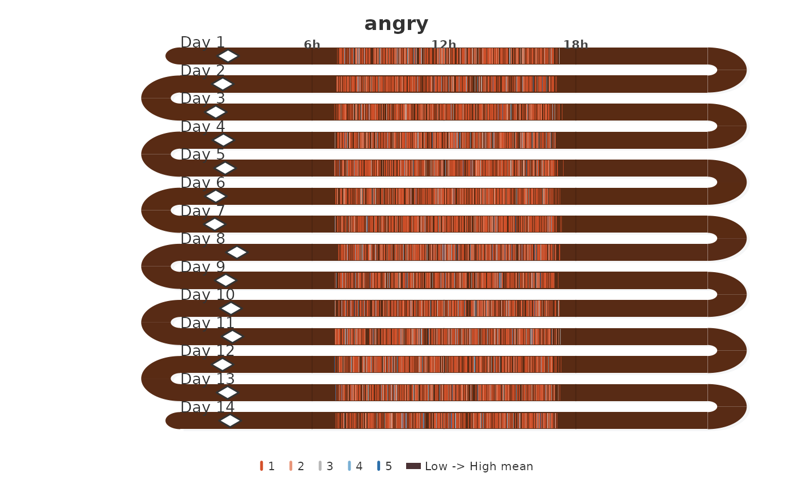
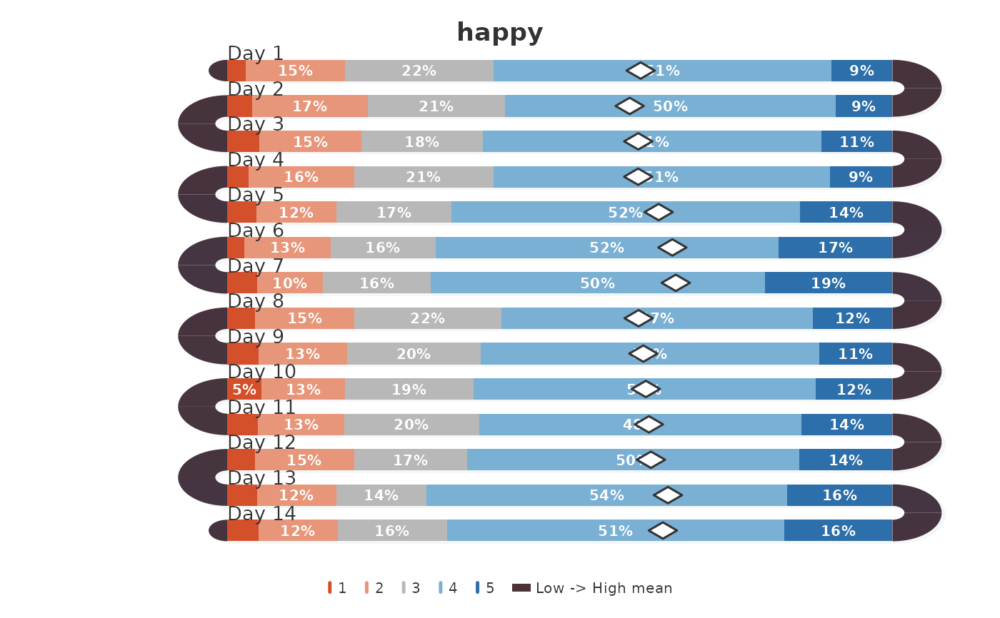
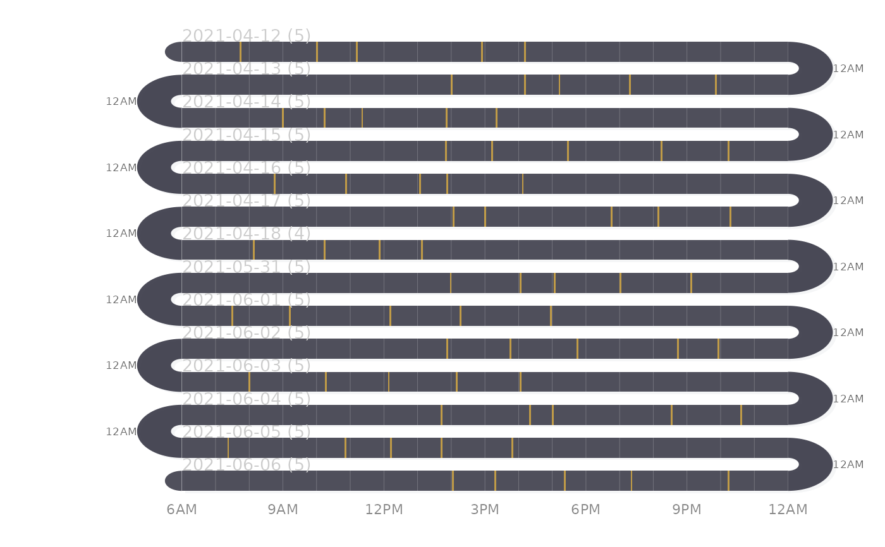

Prompt-level happiness and anger ratings from an experience-sampling study
Source:R/data.R
ema_beeps.Rdema_beeps is a dataset of all 11,474 answered prompts ("beeps") from a
14-day experience-sampling study of 321 university students (Neubauer &
Schmiedek, 2024). Each row is one prompt with the participant, the study day,
the time of the prompt and the ratings of happiness and anger, rescaled from
1-7 to 1-5 by round(1 + (x - 1) * 4 / 6). Participants answered between 1
and 69 prompts; the 14 study days of one participant need not be consecutive
calendar days.
The data are in long format. With the var, day and timestamp
arguments of survey_snake() each study day becomes a band and each
rating is placed at its time of day; the prompt times of one participant
can be shown with activity_snake().
Format
A data frame with 11,474 rows (prompts) and 5 columns:
idCharacter. Anonymised participant identifier.
dayInteger 1-14. Study day.
start_timePOSIXct (UTC). Time of the prompt, between April and July 2021.
happyInteger 1-5. Rated happiness.
angryInteger 1-5. Rated anger.
Source
Neubauer, A. B., & Schmiedek, F. (2024). Approaching academic adjustment on multiple time scales. Zeitschrift fuer Erziehungswissenschaft, 27(1), 147–168. doi:10.1007/s11618-023-01182-8
Data: https://osf.io/bhq3p | Codebook: https://osf.io/csfwg | Code: https://osf.io/84kdr/files | License: CC-BY 4.0
See also
ema_emotions and student_survey for person-level ratings;
survey_snake(); activity_snake().
Examples
# Anger over the 14 study days, each rating at its time of day
survey_snake(ema_beeps, var = "angry", day = "day",
timestamp = "start_time")

# Happiness per study day as stacked bars
survey_snake(ema_beeps, var = "happy", day = "day", tick_shape = "bar")

# When one participant answered the prompts
activity_snake(subset(ema_beeps, id == "xcVDLRQOwn", select = start_time),
show_total = FALSE, show_count = TRUE)
